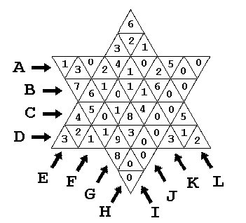

A board contains 48 triangular cells. In each cell, there is written a digit (in a range from 0 through 9). Every cell belongs to two or three lines. These lines are marked by letters from A through L.

An example is depicted on the Figure. There, the cell containing digit 9, belongs to lines D, G and I. The cell containing digit 7, belongs to lines B and I.
For each line, A, B, C, ..., L, we consider the largest digit lying on it. In the above example, the largest digit for line A is 5, for line B is 7, for line E is 6, for line H is 0, for line J is 8 and so on.
Write a program, that inputs the largest digit for any one of the depicted 12 lines. The program should find out the smallest and the largest possible sum of digits located in all the cells of the board.
Input
Every line in the input contains 12 digits, each two of them separated by a space. The first of these digits means the largest one in line A, the second means the largest one in line B, and so on, the last digit means the largest one in line L.
Example
5 7 8 9 6 1 9 0 9 8 4 6
Output
For every line in the input file write the value of the smallest and of the largest possible sum of digits located in the cells of the board, on a single line. These two values should be separated by one space exactly. If there does not exists a solution, your program must outputs the words NO SOLUTION instead of the above two values.
Example
40 172